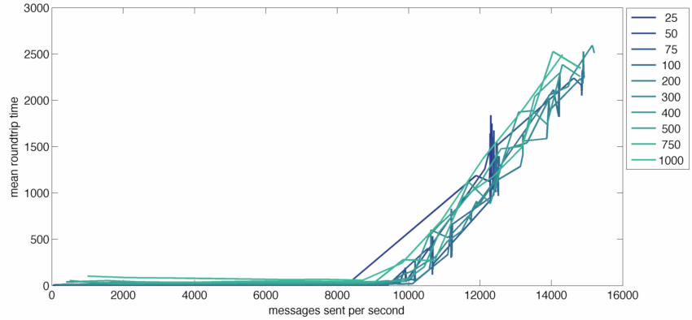
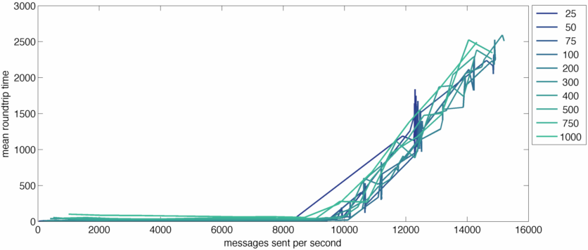
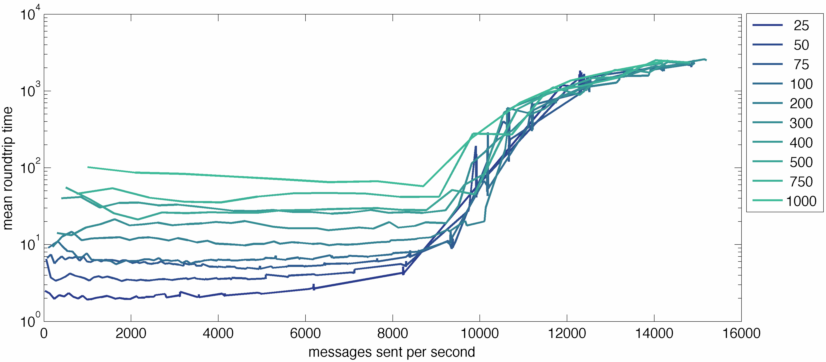

I've had lots of fun making prototypes in nodejs with socket.io. But I've felt lost in thinking about the performance of the server if I ever needed to scale something up. What operations, exactly, are costly? What is the bottleneck in performance? A few potential limiting factors came to mind:
There's been some nice work at figuring out how many connections a server might be able to support, but that only knocks out one of our potential bottlenecks. How do we figure out whether holding simultaneous connections open is the most intensive part of scaling up a socket.io server? And if the bottleneck is message-related, what's a good rule of thumb for the maximum throughput of a single socket.io instance?
In my work, I'm interested in building real-time applications for synchronous interaction, so this analysis is going to focus primarily on the cost to sending messages from the server to the client, not the cost of receiving messages from clients. Certainly, there are some applications with the low-messaging-rate/high-concurrency access patterns that Mikito Takada talks about, but for me what's most exciting about socket.io is the potential for more interactive experiences that require quite a bit more client/server chatter.
This is not a comparative analysis of different technologies. I'm not trying to argue that node or socket.io are better or worse than some other technique (although I will muse on the tradeoffs at the end of the piece), I'm simply trying to give people architecting socket.io applications a sense of when they might start hitting limits and what the behavior is when you're close to the limit. I should also say that I'm not a veteran node programmer, so I apologize if there are any glaring mistakes or I'm making arguments that are already obvious to everyone. They weren't obvious to me starting out, and I had a hard time finding the information I wanted elsewhere, so here I am.
TL;DR If you want to bypass the full analysis, heres the punchline: on a 3.3 GHz Xeon X5470 using one core, the max messages-sent-per-second rate is around 9,000–10,000 depending on the concurrency level. Above that point, performance rapidly degrades and periodic tasks fail to execute in a timely matter which can lead to disconnected sockets among other problems. Below that point, response times are the same regardless of messaging rate. This means you should be conscientious about how often and to how many users you send messages; they are by no means computationally free.
The testing setup is pretty simple, but is worth a quick description. The server is basically trivial. It's an echo-broadcast server: whenever it receives a message, it broadcasts that message to every connected client.
The client is a little more complicated, but not much. It makes a set number of connections to the server (the concurrency level), sends a certain number of messages per second (across all connected clients, not per client), and measures the time that elapses between when the message is sent and when it receives the server-broadcasted version of that message. The client gathers the mean response times across a range of concurrency levels and message sending rates, which forms the data set for the analysis below. If the server ever drops a connection (which happens at high loads - more on this later) or it takes longer than five seconds for all the sent-messages to be received after sending stops, then the test is over for that concurrency level. The client is written in Java, using this websocket implementation. I tried writing the test client in node and python, but had issues holding hundreds of sockets open at high load rates. This is not particularly surprising—for the same reasons that the server fails at sending too many message a second, the single-threaded clients had a hard time processing all the incoming messages fast enough. This may suggest that receiving messages is similarly costly to sending, but I didn't look that closely at this to be able to say conclusively.
I ran the test across a range of concurrency levels (25-1,000) for a range of messaging rates. At each concurrency level / messaging rate setting, the client collected mean roundtrip times for each message. This is the dependent variable in these tests. All the graphs in this section come from the same data set. The server was running on an Ubuntu VM using one core of a 3.3 GHz Xeon X5470 in a data center here at the MIT Media Lab. The computer running the test client was a beastly OS X machine that never seemed to be I/O or CPU limited during testing.
When looking at these graphs, it's important to remember that any response time greater than 200ms represents a basically fatal situation; if response times start to rise, it means the task queue on the server has started to receive tasks faster than it can process them. When we hit this state, which I'm calling "jamming", (there may well be some already agreed upon way to describe this state, but I haven't seen it), the server will fall further and further behind and won't be able to recover unless load drops below the jamming threshold and stays below it long enough to clear the backlog. So what we're really interested in here is at what load levels (concurrency level / messaging rate) we start to see slowdown. That will give us a sense of what a maximum safe load level might be. We don't really want to be above that level if we can avoid it, even for short periods of time, because the responsiveness of our application drops substantially.
On the X axis of this graph, we're measuring messages received by the server per second across a range of concurrency levels. Each line is a different concurrency level; low concurrency lines are darker, high concurrency is lighter. The Y axis is mean roundtrip time for messages, in milliseconds. You can see the onset of serious performance problems occurs at much lower message reception rates as concurrency increases. This makes sense because for every message we receive we're sending a message to every connected client, so if sends are even a little expensive, we can quickly jam the event loop. Put another way, the ratio of messages received to messages sent is going to be equal to the concurrency level, so at higher concurrency levels we're doing a lot more work and will fail at lower message received rates.
So lets massage the data and change the X axis to be messages sent by the server instead of messages received. Because every messages we receive gets broadcasted to every connected client, we can just multiply messages received by the concurrency level.
When we shift to messages sent per second the different concurrency levels align nicely. No matter your concurrency level, there appears to be a relatively hard limit between 9,000 and 10,000 messages sent per second. (It looks like the concurrency-25 jams earlier, but that's an artifact that takes too much time to explain. It's not really failing at that point.)
The last aspect I want to poke at is behavior below the jamming threshold. Lets switch to a logarithmic Y axis and see how it looks.
I want to focus your attention on the pre-jamming part of this graph. What we can see here is that higher concurrency levels do add load to the server. When you're at a concurrency level of 1,000, mean roundtrip times are always longer than when you're at lower concurrency levels. But this load level doesn't seem to be correlated with messaging loads at all. Response times are basically the same regardless of the messaging rate and and they depend only on the concurrency level. This difference is not that dramatic, though. Even with 1,000 simultaneous clients, mean roundtrip times are on the order of 100ms. That's not amazing, but it's certainly manageable and it stays pretty much constant until you hit the jamming threshold.
There's been a lot of conversation about the relative performance of single-threaded versus multiple-threaded applications. I'm not doing a direct comparison here, but nonetheless I think there are some interesting lessons.
In a single-threaded environment like node, scheduling tasks is handled with a queue. When we start to see rising roundtrip times, it means we've started adding tasks to the queue more quickly than they can be processed. Once the server hits that point, performance is going to very rapidly degrade until the rate of adding new tasks falls below the jamming threshold. Even then, it'll take a while to clear out the queue and get back to acceptable performance. Perhaps even more troubling, when the queue is being jammed, setTimeout seems to stop working reliably; you can schedule a task 1000ms into the future but if the queue is jammed that task seems to wait more or less until the queue clears.
This is not necessarily all bad news. It's not like a multi-threaded model performs way better if you're asking the CPU to do more work than it can handle. Both modes fail in problematic ways. Having a thread scheduler in place might give you better tools to handle this state, but really our goal should probably be not to get to that state in the first place.
On the plus side, performance in non-jammed situations is superb. Up until you jam, you can send even relatively large amounts of messages very quickly at essentially no latency cost. That seems like a pretty nice performance profile to me, but it does mean you're not going to get a sort of graceful slowdown as load increases. Instead, it might be abrupt and dramatic.
The task queue also explains why we see longer roundtrip times at higher concurrency levels, even at very low messaging rates. There seems to be a certain amount of periodic CPU overhead to keeping sockets open that needs to happen more or less all the time. If a bunch of these socket upkeep tasks are queued up when a message arrives, it's not going to get processed until socket upkeep is done. This pushes up mean roundtrip times. Really, any periodic task your system needs to do (and most systems will have something in this category) will have a similar effect on your baseline roundtrip performance. Above the jamming threshold, these periodic tasks simply don't get processed in time. In socket.io's case, if you jam the server, it will start dropping connections indiscriminately because it can't get its socket upkeep executed in reasonable timeframes.
Ultimately, I spent a bunch of time figuring this out because I wanted to ask a very practical question: Where should I focus my optimization efforts? It's clear to me now that I have to be cautious with how often I use io.sockets.emit or io.sockets.in. If I want to be able to support 5,000 concurrent users, a broadcast every second will use up basically half of my messaging capacity. If I have a chat room with 200 people in it sending a message a second on average, that's only about 2% of my capacity.
When you do need to start scaling, this also suggests a plan of attack. You could split off a thin communication layer that keeps sockets open for you and handles sending and receiving and isolate a significant chunk of the load. Once that part of the problem is its own process, you can more easily scale up without making any particularly significant changes to the actual core logic of the application. This is all speculative, though. I haven't actually written that part of the system yet, but based on this data it seems to me like a reasonable strategy.
There are a bunch of questions that I didn't address that might be interesting. Here are some quick potential outstanding questions:
All the code I used to generate this data is available in the github repository. It's not particularly useable or well documented, but it did work long enough for me to collect the data. Please let me know if you discover any egregious oversights in the methodology that the code reveals and I'll update this article accordingly. You could also see what the jamming threshold looks like on your own hardware, if you were curious. You can download the whole repository in either zip or tar formats.
You can also clone the project with Git by running:
$ git clone git://github.com/drewww/socket.io-benchmarkingI would of course be deeply grateful for any updates or edits to the code. It might be worth turning the core client-side tester into a general purpose socket.io load testing tool aimed for practical, real-life use patterns at high concurrency.
After doing this benchmarking, I built the barest bones of a message-queue based system that would allow you to easily spread this load across multiple machines. It's realllly rough, but it boosts the jamming threshold as one might expect by spreading the socket-management load across multiple machines. You can find that work in the "rabbit" branch of this repository. There's an io node, a core server node, and a load balancer that work together to make this possible.
You might also be interested in a fork of this project that supports the SockJS protocol and is a slightly cleaner codebase with some bug fixes.